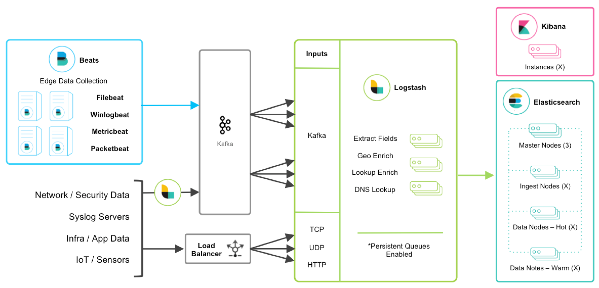

- 00 开篇词 可观测性，让开发和维护系统的你每晚都能睡个好觉！.md.html
- 01 以史鉴今：监控是如何一步步发展而来的？.md.html
- 02 基本概念：指标+日志+链路追踪=可观测性？.md.html
- 03 相互对比：可观测性和传统监控有什么区别？.md.html
- 04 OpenTelemetry：如何利用OpenTelemetry采集可观测数据？.md.html
- 05 构建可观测平台：应该购买商业产品还是自己搭建？.md.html
- 06 团队合作：不同团队如何高效共建可观测性？.md.html
- 07 软件开发：如何利用可观测性进行驱动？.md.html
- 08 建立 SLO：如何为系统可靠性的量化提供依据？.md.html
- 09 跟踪 SLO：如何基于错误预算采取行动？.md.html
- 10 实战 1：从 0 到 1 建立系统应用的可观测性.md.html
- 11 实战 2：基于可观测性数据进行问题分析和根因定位.md.html
- 12 实战 3：构建基于 Kubernetes 的系统可观测性.md.html
- 13 实战 4：建立软件持续集成和发布的可观测性.md.html
- 14 文化建设：如何构建可观测性的文化和框架_.md.html
- 15 展望未来：可观测性在未来的发展趋势是什么？.md.html
- 结束语 在实践中，用科学的方法分析和解决问题.md.html
- 捐赠
05 构建可观测平台：应该购买商业产品还是自己搭建？
你好，我是翁一磊。
上节课，我们介绍了现在非常热门的可观测性标准和规范 OpenTelemetry，你可以通过 OpenTelemetry 来构建针对你的系统和应用的可观测性。然而除了 OpenTelemetry，也有很多其他的开源工具、各种商业软件和产品。所以，在你撸起袖子准备开始干活之前，我们需要先讨论一下下面这个问题：建立可观测性，是应该自己搭建，还是直接购买商业产品呢？
首先我得承认，我自己就是一个可观测性软件供应商的职员。这样一来，你可能会觉得我一定会推荐购买商业产品。不过，公正性这点你可以放心，不管是哪一种方式，我都会从成本和收益的角度来给你介绍。最后的选择权，毕竟还是在你手上的。
成本和收益的考量
当我们考虑自建还是采购可观测平台的时候，你的第一反应可能是觉得自建更划算，因为开源软件都是免费的，而商业软件要满足企业的需求，基本上都是付费的，而且是一笔不小的投资。这是一个很明显的误区。实际上，我们应该考虑的是整体的拥有总成本（Total Cost of Ownership），也就是 TCO。
TCO 可以定义为一个实体（比如说一个企业）在适当条件下和时间范围内，使用和维护商品或服务所发生的所有费用。这个费用不仅仅是购买商品或服务的费用，还包括了下面很多方面。
- 资源成本：无论是自建还是购买商业产品，都需要考虑安装和部署这些产品所需要准备的计算、存储等资源的成本；如果是使用 SaaS 产品，也会存在资源成本，比如你的遥测数据传输到 SaaS 端所需要的流量成本。
- 人力成本：这两种方式在人力成本上的侧重点不同。自建可观测平台时，安装、配置、以及二次开发所选择工具的都需要时间，购买商业产品则需要花费相应的操作培训时间。这些需要花费的时间都会转化为相关人员的薪资，这也是对于一个企业来说重要的成本之一。
- 拆除或最终处置成本：在某些情况下，如果不再使用相关的工具或产品，不管是自建还是购买，都不一定能简单地直接扔掉。我们要考虑如何代替它，是否存在必要的迁移工作，这也会带来一些成本。
有成本，我们必然希望它伴随着收益。建立可观测性的回报，主要是在系统可靠性的提升上。可观测性可以为最终用户带来更好的体验和服务，满足业务的需求，甚至是驱动业务的发展。
同时，就像我在前面介绍的，在云原生的时代，随着系统复杂性的大大提高，一个完全不会出问题的系统是不存在的，那在有问题或者故障的时候，能够快速地找到问题的根本原因，缩短故障平均恢复时间（MTTR）就变得非常重要了。而这些，都是建立可观测性的价值收益。
接下来我们就来看一看，自建和购买商业产品分别存在哪些成本和收益。
自己搭建可观测性
自建的成本
这里的自建，指的不是从零到一开始自研一整套可观测平台（这种方式的时间、人力等成本相对非常高），而是基于开源的产品进行构建和二次开发，这应该也是更多企业能够接受和采取的方式。
我在第 3 讲中介绍过，可观测性不仅仅是监控，所以自建可观测平台需要考虑监控、日志以及链路追踪。同时，除了计算存储的资源，还需要根据数据量的规模，考虑消息中间件、缓存、数据库等多种组件所需要的资源。
例如，这里是一个日志分析平台 ELK 的典型架构（ELK 是三个开源项目的首字母缩写，分别是：Elasticsearch、Logstash 和 Kibana）：

如果你想通过开源软件自建可观测性，可能需要下面这些组件。
- 监控：Prometheus+Grafana。
- 日志：Logstash+Kibana。
- 链路追踪：SkyWalking。
- 数据存储：Elasticsearch 集群。
- 消息队列：Kafka 集群。
- 数据库：MySQL 集群。
- 内存数据库：Redis 集群。
这时候，就需要考虑像资源、人力还有一些隐性成本了。
资源成本
- 要满足数据量较大的情况，简单的几台 1C2G 虚拟机是很难解决问题的。尤其是在生产环境中，如果数据量大，Elasticsearch 的计算节点需要较高配置，一般来说需要 16C 64GB 的两个主机节点再加一个控制节点。
- 日志的原始数据到后端的存储，虽然存在一定的压缩，但实际容量还需要考虑索引、2 份数据副本等因素所占据的存储空间。
- 如果使用公有云，还需要考虑各个计算节点的存储成本。另外，自建数据中心还涉及服务器成本、机房费用、后续扩容成本等等。
人力的成本
- 维护这些自建的工具，1 个人肯定不够，往往需要 2~3 人的团队来进行安装部署、功能的开发、问题的排查和处理、性能的调优等方方面面的工作。
- 另外，二次开发也需要人力成本。绝大多数的企业并不具备二次开发的能力，但即使进行二次开发，也可能因为主导这个的技术负责人或相关人员离职，导致项目难以为继。由于可观测性面对的是全量的不断迭代的技术栈，如果人手不足，无法跟上技术发展情况，整个团队的技术应用反而会被限制，所以这方面不可忽视。
- 同时，我们也要考虑技术人员的真实水平，需要考虑他们是否有足够的能力来提供一个具有用户界面，且工作流程兼具灵活性和性能的系统，这样才可能在企业范围内推广可观测平台。如果产品力不够，无法达到可观测性的效果，将带来更多的成本损失。
隐性的成本
- 由于这种将开源软件组合起来的方案，从某种意义上来说只能称之为一些工具的组合，不能称之为完整的可观测平台（它并没有完全解决数据孤岛的问题）。当你遇到一些业务问题时，仍然需要访问不同的工具来分析问题，而且还需要和不同的团队沟通，会花费很多时间。
- 持续维护也需要成本。你的技术栈中的底层第三方组件必须及时更新和补丁，同时你还需要考虑自建组件的安全问题。
自建的收益
通常来说，基于开源软件自建可观测平台，不需要等待比较长的采购周期。完成选型之后，可以快速开始构建。在互联网快速发展的今天，这是不小的优势。有技术能力的企业可以快速上手、构建原型，并通过不断打磨逐渐完善平台。
而且，比较成熟的开源软件往往有强大的技术社区做支撑。有来自世界各地成百上千的程序员共同维护一套软件，可以保持活力，让软件不断得到更新，既有问题较快得到修复。
另一方面，自己构建软件可以建立企业内部的专业知识。每个企业都会有自己的需求，继而会需要将这些需求转化成软件的功能。自建这种方式让企业内部的利益相关者的沟通、协调更加顺畅，能更好地为业务需求服务。
使用商业产品构建可观测性
购买的成本
企业在采购第三方的产品和服务时，一般会有下面这些考虑。
- 一次性花这么多钱，这个产品对业务有什么价值？
- 前期 PoC 特别好，但是真正用起来会不会完全是另外一回事？
- 供应商会不会无法满足新的业务需求，只能苦苦等待他们更新呢？如何确保购买的产品能够持续满足不断变化的需求？
- 能不能避免供应商锁定？如果因为各种原因需要选择新的产品，需要多少时间和精力进行迁移和切换？
这些都是购买商业软件需要考虑的成本因素。购买商业产品本身的流程一般比较漫长。经过测试、招投标等一系列过程之后，如果产品满足不了我们的使用需求，或是因为各种原因需要推倒重来，那整个过程消耗的财务、时间以及人力成本会是巨大的。
另一方面，很多商业软件都是按照许可证的方式来收费的。如果你的公司处在一个快速成长的阶段，你就需要考虑公司在发展壮大之后，继续使用商业软件的额外开销了。
购买的收益
如果你购买和使用的是 SaaS 软件，可以减少自建平台所花费的计算、存储等各方面资源的投资、以及维护的费用。即使购买的平台需要安装部署，一般也都会由厂商来负责，完成初始化配置之后，就可以开始使用了。更重要的是，原本需要做开源软件二次开发的工程师就可以把时间精力放在业务保障上，他们不再需要彻底研究和掌握开源软件的开发与维护。
而从另一方面来说，选购合适的商业产品，也是把专业的事情交给专业的人来做。你可能获得一个拥有专业知识的合作伙伴，他们在可观测领域有着自己的积累，能够为你提供专业的服务，解决各种问题，如果换做自己来研究，可能需要花费数年才能达到这个程度。
小结
好了，这节课就讲到这里。
这节课，我们从成本和收益的角度，分析了自建和购买这两种方式。自建考虑的更多是资源成本和时间成本（转化为人员的成本），购买考虑的更多的是购买的费用。然而，这两种方式的隐性成本往往才是最容易被忽略的地方。
换个角度讲，自建还是购买可观测平台其实并不是一个非黑即白的问题。即使购买了一个商业软件，也不一定意味着你的企业就完全不需要可观测性团队了。实际上，可观测性团队对于满足企业业务的可观测性需求是必不可少的。
下节课，我们会介绍可观测对于 DevOps、系统可靠性（SRE）的帮助，了解为了高效实施可观测性，团队应该如何展开合作。开发也需要为可观测性负责，与运维团队一起保障服务的质量水平。
思考题
在这节课的最后，留给你一道思考题。
如果你的公司需要构建可观测平台，你们会选择哪种方式？你是如何考虑的？如果已经搭建了可观测平台，效果如何，你有什么样的心得和体会？
欢迎你在留言区和我交流讨论，我们下节课见！
© 2019 - 2023 Liangliang Lee. Powered by gin and hexo-theme-book.